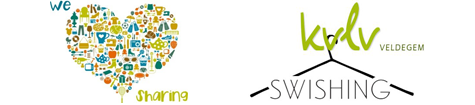
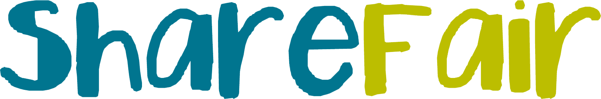
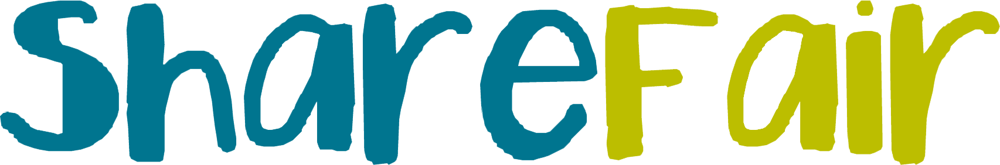

ShareFair - ‘samen delen’
ShareFair is een evenement waarop mensen delen en dingen weggeven waarvan ze zelf geen gebruik meer maken.
De bedoeling is om verspilling tegen te gaan en de wegwerpcultuur een hak te zetten!
Het is hip, gezellig, gratis én eco-minded!
Swishing of kledijwissel
- Hoe werkt ‘swishing’?
Elke dame brengt ruilgerief binnen die ze om welke reden dan ook wil ruilen (te klein, valt niet meer in de smaak, miskoop, …) Per binnen gebracht stuk kan je gratis een ander stuk uit onze collectie kiezen. - Wat kan je ruilen?
Alle propere, fris ruikende, hedendaagse dameskledij en accessoires zoals sjaals, handtassen, riemen, fantasiejuwelen. Geen lingerie of badmode. Geen schoenen. Max. 5 per persoon, zijn welkom. - Wanneer het ruilmateriaal binnenbrengen?
Het ruilmateriaal kan ofwel op vrijdag 17/10 tussen 15u en 17u of op zaterdag 18/10 tussen 16u en 18u binnen gebracht worden bij site Develter. Schikt dit niet, neem dan contact op, we zoeken samen een oplossing. - Wat met de niet geruilde kledingstukken?
De kledij en accessoires die overblijven worden geschonken aan VZW De Helpende Hand te Zedelgem - Wat kost een deelname?
Swishing is gratis! Spullen een tweede leven geven is goed voor het milieu én je portemonnee! - Valt er daar nog iets anders te beleven?
Tuurlijk! Zelfs als je niets hebt om te ruilen ben je er welkom in onze gezellige bar! Ook het KVLV-aanbod 2015 kan je er komen ontdekken. Op een winterse zondag bij een hapje of een drankje mensen ontmoeten : zalig!
JE KOMT TOCH OOK NAAR DE EERSTE SHAREFAIR OP DE GEMEENTE?
